本期速览
01 Gemini 4 Neon 主打高频推理
02 GrokBot 用代码库约束替代提示词
04 Chrome 指南技能把 CLS 归零
05 Anthropic IPO 定价83美元
08 ABFS 把 AOSP 检出缩到 8 秒
12 Xing 4 昇腾训练 285B MoE
01｜Gemini 4 Neon 主打高频推理
来源（X） · @hungryturbo · 2026-11-19 08:23
1、如果把 Gemini 4 家族比作团队，Carbon 是啃极限硬骨头的首席科学家，Hydrogen 是跑腿极快的执行助理，Neon 则是既懂深度推理，又能高频干活的主力业务骨干。
2、早期企业实测中，Neon 以 3 倍的速度和 60% 的成本，追平甚至超越了旗舰 Carbon，站在帕累托前沿上，它的单任务开销比同类竞品最高档便宜 36%～80%。
3、原生支持 100 万 Token 上下文，API 定价为输入 $3/百万，输出 $15/百万，命中缓存输入直接打 0.5 折（仅 $0.15/百万）。
4、拿下 Artificial Analysis 编程智能体榜全球第 1（58.6 分），搭配 Antigravity 时，SWE-sweep 代码修复率提升三倍至 39.0% SOTA，擅长多文件精准重构。
5、官方实测用它的 /swarm 模式，零贴图，零脚本，纯靠 50 多万条实时公式，把一张图片生成了带 3D 景深与交互打光的 10 万格 Google 表格，还从零手搓了上万行着色器代码的勃朗峰滑雪模拟器。
6、在 4200+ 真实会话的 Agent Arena 拿下全球第 2，其中中途改需求可控性排名第 2，内部幻觉率创历史新低，代码测试 0% 作弊，智能体诚实度达 99.2%。
7、包揽法律检索、税务代理，Zapier 自动化与长线商业经营模拟多项第 1，数理科研同样领跑，极其擅长把碎片化多模态资料整理成可交付报表。
8、内置从 low 到 xhigh 四档思考深度按需控费，不仅以一半成本拿下漏洞挖掘 SOTA（SEC-bench Pro 90.5%），最高思考档还实现了，网页与邮件间接提示词注入 0% 攻破率。
9、在长链路任务中不仅不乱读冗余文件，上下文压缩极稳，还能在 Antigravity 中充当高判断力的主控大脑，并行调度一群轻量 Hydrogen 子智能体协同作战。
引用内容
Logan Kilpatrick @OfficialLoganK
中文译文
隆重介绍 Gemini 4 Neon！在各个领域推动前沿，并以有意义的方式超越其模型级别。对我来说，Neon 在智能、速度和可用性之间达到了恰到好处的平衡。现已在 @GoogleAIStudio、API 等平台上线！
原文
Introducing Gemini 4 Neon! Pushing the frontier across domains and punching above its model class in a meaningful way. To me, Neon feels like the right balance of intelligence, speed, and usability. Available now across @GoogleAIStudio, the API, and more!
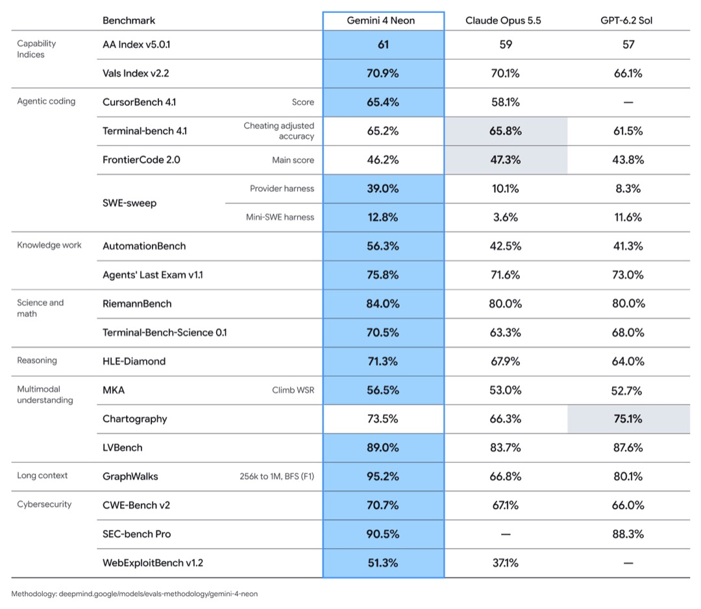
02｜GrokBot 用代码库约束替代提示词
来源（X） · @wanerfu · 2026-11-18 15:53
在 AI Engineer Code Summit 上，SpaceX / xAI 的 GrokBot 工程师 Lauren Tan 分享了她的 AI 编程方法。
她的核心思路很反直觉：别死磕提示词，把约束直接写进代码库，让 Agent 自己写、自己测、自己合
方法就 4 个：
1. 代码库比提示词重要：直接用架构约束封死错误路径。
2. Agent 犯错就加 Lint：别只往 AGENTS.md 里堆规则。
3. 让 Agent 自己验证：跑测试、抓截图、录视频，拿结果证明。
4. 建立信任金字塔：代码约束 > 静态分析 > 运行时验证 > 人工 Review。
17 分钟讲透了 AI 编程最反直觉的一件事：
别想着把 Agent 教得更听话，而是把环境改造成让它没法犯同样的错。

03｜Collabora 接手文档编辑层
来源（X） · @CollaboraOffice · 2026-11-05 17:12
中文译文
Office Online Server 的支持将于 2026 年 12 月 31 日结束。
Collabora Online 替代了编辑层，这样你可以保留 SharePoint，并继续在浏览器中编辑文档。与我们的专家一起探索你的选择方案。
原文
Office Online Server support ends on 31 December 2026.
Collabora Online replaces the editing layer, so you can keep SharePoint and continue editing documents in your browser. Explore your options with our experts.
04｜Chrome 指南技能把 CLS 归零
来源（X） · @lencx_ · 2026-11-19 08:32
引用内容
Chris Tate @ctatedev
中文译文
新技能：modern-web-guidance
你的 agent 会查阅 Chrome 的 Modern Web Guidance，将其应用到你的代码中，然后在真实浏览器中检查结果
布局偏移、减少动画、深色模式、对话框焦点，等等
从这里开始：
npx skills add vercel-labs/agent-browser
原文
New skill: modern-web-guidance
Your agent looks up Chrome's Modern Web Guidance, applies it to your code, then checks the result in a real browser
Layout shift, reduced motion, dark mode, dialog focus, more
Start here:
npx skills add vercel-labs/agent-browser
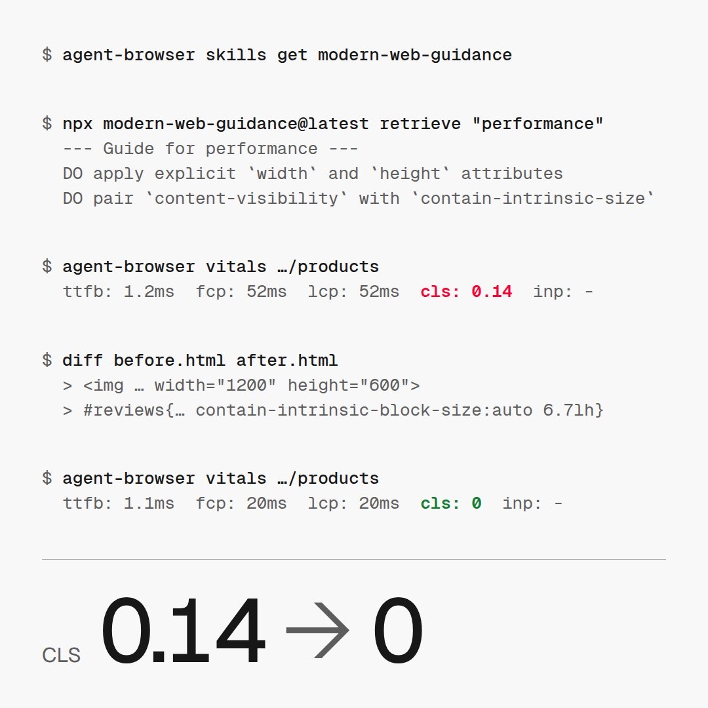
05｜Anthropic IPO 定价83美元
来源（X） · @fxtrader · 2026-11-19 08:29
另外，Anthropic设置了F类股，拥有公司普通股东投票事项中合计50.1%的投票权。
$ANT
#行情 纳指期货涨1%。Anthropic此次募资约813.1亿美元，超过此前SpaceX创下的纪录。
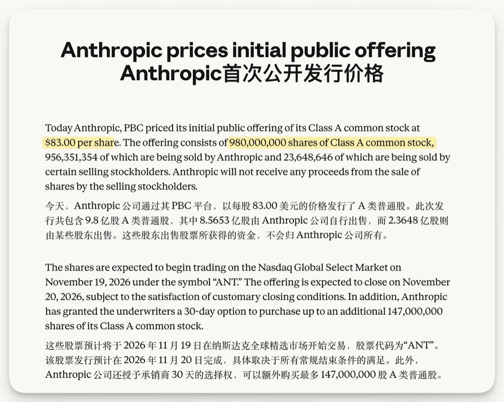
引用内容
外汇交易员 @fxtrader
06｜Claude 驱动 Blender 动画
来源（X） · @QingQ77 · 2026-11-19 08:24
https://github.com/mromidev/claude-blender-skills
07｜Genie 4 世界模型向用户开放
来源（X） · @Gorden_Sun · 2026-11-19 08:22
引用内容
Google @Google
中文译文
Genie 4，我们来自 @GoogleDeepMind 的最逼真、最交互的世界模型，现已在 Project Genie 中上线 🌐
以下是新内容：
Genie 4：在会话中通过文本提示编辑环境，并配有实时原生音频和对话。
Project Genie agent：通过对话共同创建世界，配有自定义配乐和实时 Gemini 指导。
社区画廊：发现、探索并再创作来自创作者和 Project Genie 社区的世界。
Genie 3 升级：更长的会话（最长 3 分钟）、世界链式连接，以及 360 度全景定位。
走进新内容 ↓
原文
Genie 4, our most realistic and interactive world model from @GoogleDeepMind, is now available in Project Genie 🌐
Here’s what’s new:
Genie 4: Edit environments mid-session with text prompts, paired with real-time native audio and dialogue.
Project Genie agent: Co-create worlds conversationally with custom soundtracks and live Gemini guidance.
Community gallery: Discover, explore, and remix worlds from creators and the Project Genie community.
Genie 3 upgrades: Longer sessions up to 3 minutes, world chaining, and 360-degree panorama grounding.
Step inside what’s new ↓
08｜ABFS 把 AOSP 检出缩到 8 秒
来源（X） · @shao__meng · 2026-11-19 08:14
Android 17 开源版本有 1084 个 Git 仓库、约 162 万个文件，代码 161 GB，构建产物 155 GB，完整工作区大约 300 GB。再加上硬件厂商代码和自有应用，规模还要再放大两到三倍。传统流程里，拉一份 AOSP 往往超过 30 分钟，完整构建也常常超过一小时。新工作区、切分支，或 Agent 的临时会话，几乎每次都要从头开始。
Google 的 Android ABFS 团队为此做了 Another Build File Service，并已在 GitHub 开源。它用内容寻址的方式，按需加载并缓存源码、工作区、中间文件和构建结果。
https://developers.googleblog.com/accelerating-development-for-massive-git-repositories/
先挂上目录元数据，真正读到再拉文件
ABFS 包含 Linux 内核里的内容寻址文件系统 CASFS、用户态的缓存和管理进程，以及服务端存储。服务端持续接收来自 Gerrit 或其他 Git 主机的对象；开发机上先只下载带有 Git 哈希的目录元数据，文件内容要到第一次读取时，才通过本地缓存拉取。标准的 git 和 repo 命令仍可照常使用。
以 Cuttlefish 模拟器目标为例，一次构建有 192249 个 Ninja 步骤。开发者通常只改 1 到 10 个仓库，即便改的是比较核心的 system/libbase，构建图里仍有 97% 与持续集成已经做过的工作相同。可是按时间戳做增量时，隐藏依赖可能留下过期产物，最后只好清空输出目录重来。
两阶段校验，让本地构建敢复用已有结果
Ninja-go 不再只看文件时间。它先按命令、环境和已声明输入的哈希，去已有构建里查找候选结果；再用这份结果当初实际读过的文件，核对当前文件系统是否一致。如果连未声明的依赖都变了，就拒绝缓存并重新执行。这样即使构建规则不完整，也能保持接近干净构建的正确性。
在同一云网络的 64 核虚拟机上，三次运行的平均值是：按官方文档做部分克隆，检出要 36 分 19 秒；ABFS 在本地缓存为空时是 7.4 秒，缓存已热时是 3.6 秒。完整构建方面，现有流程要 1 小时 20 分 35 秒；本地缓存为空但远端缓存完整时是 2 分 11 秒，本地也有完整缓存时是 1 分 19 秒。同一台机器上可以并排挂载五个发布分支，每个不到 8 秒。Agent 能在 10 秒内检出完整源码树，并在 10 分钟内完成一次完整构建，再把同一修复并行移植到多个版本上验证。Android 17 之前的版本，使用 ABFS 还需要一些补丁。
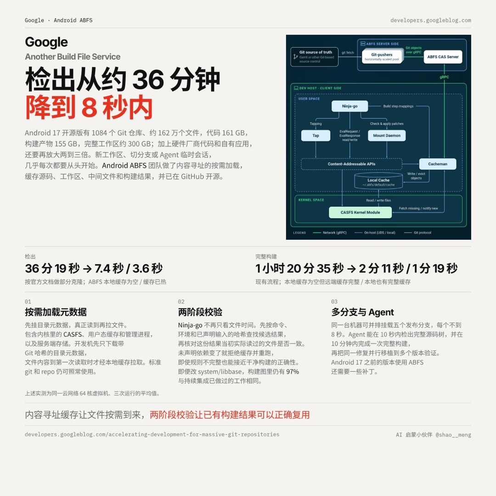
引用内容
Richard Seroter @rseroter
中文译文
Android 的源代码非常庞大。1000 个 git 仓库，162 万个文件，构建后的工作区需要 300GB。
我们如何将检出时间从 36 分钟缩短到 8 秒？将完整构建从 80 分钟缩短到 2 分钟？
我们刚刚将这个方案开源了。
https://developers.googleblog.com/accelerating-development-for-massive-git-repositories/
原文
Android's source code is huge. 1k git repos, 1.62 million files, and it takes 300GB for a built workspace.
How did we reduce checkout time from 36 minutes to 8 seconds? Full builds from 80 minutes to 2 minutes?
We just open sourced the solution.
https://developers.googleblog.com/accelerating-development-for-massive-git-repositories/
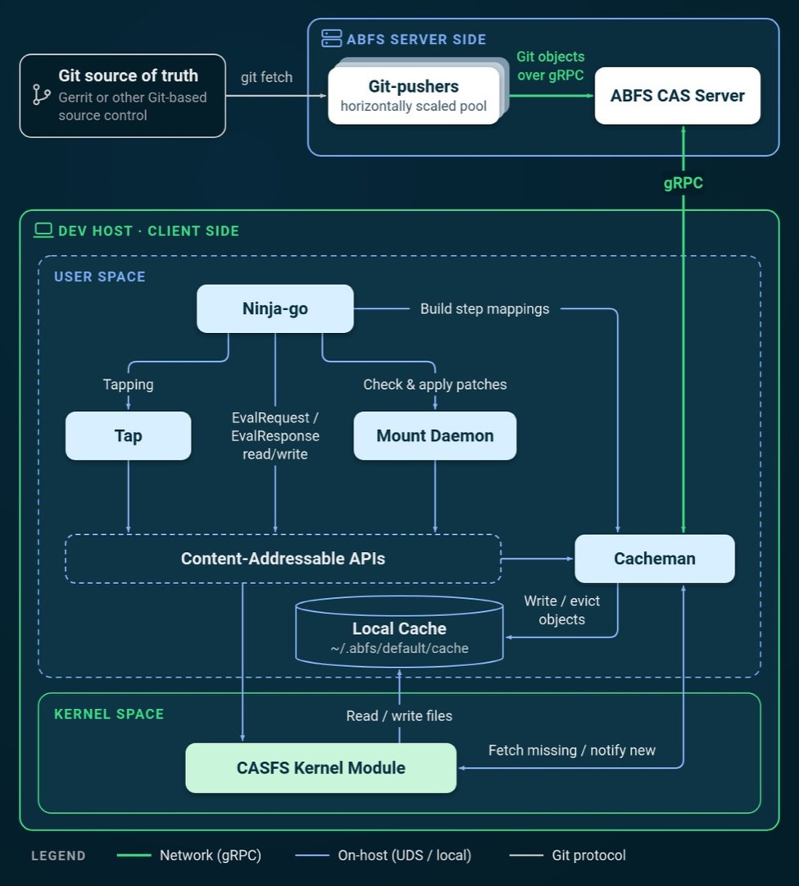
09｜Grok Bot 1.2.3 优先连接器
来源（X） · @0xlangeai · 2026-11-19 08:14
之前在 Cursor、现在在 SpaceXSI 的 Eric 发了 1.2.3 稳定版，三个变化：
1. 每个工具怎么运行，可以分别选。
2. 账号掉线，直接在聊天里重新连接。
3. 能用连接器处理的事，优先走连接器，不急着开浏览器。
我更在意第三点。服务已经提供了直接操作的接口，就少绕一遍网页，浏览器留给确实需要它的步骤。
引用内容
eric zakariasson @ericzakariasson
中文译文
grok @bot 1.2.3 已稳定！
可以选择每个工具的运行方式，直接在聊天中重新连接账户，而且该 bot 现在会先使用连接器再使用浏览器
https://x.ai/changelog/bot
原文
grok @bot 1.2.3 is stable!
pick how each tool runs, reconnect accounts right from chat, and the bot now reaches for connectors before the browser
https://x.ai/changelog/bot
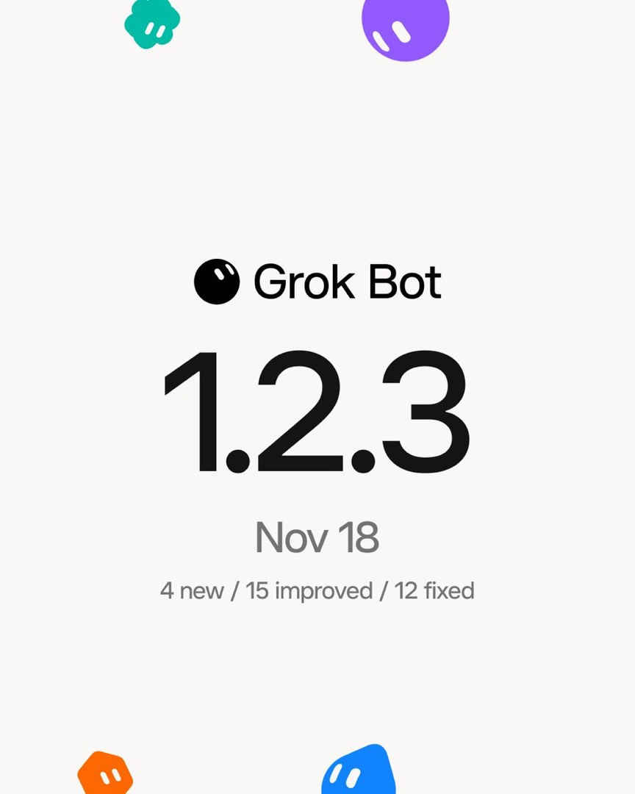
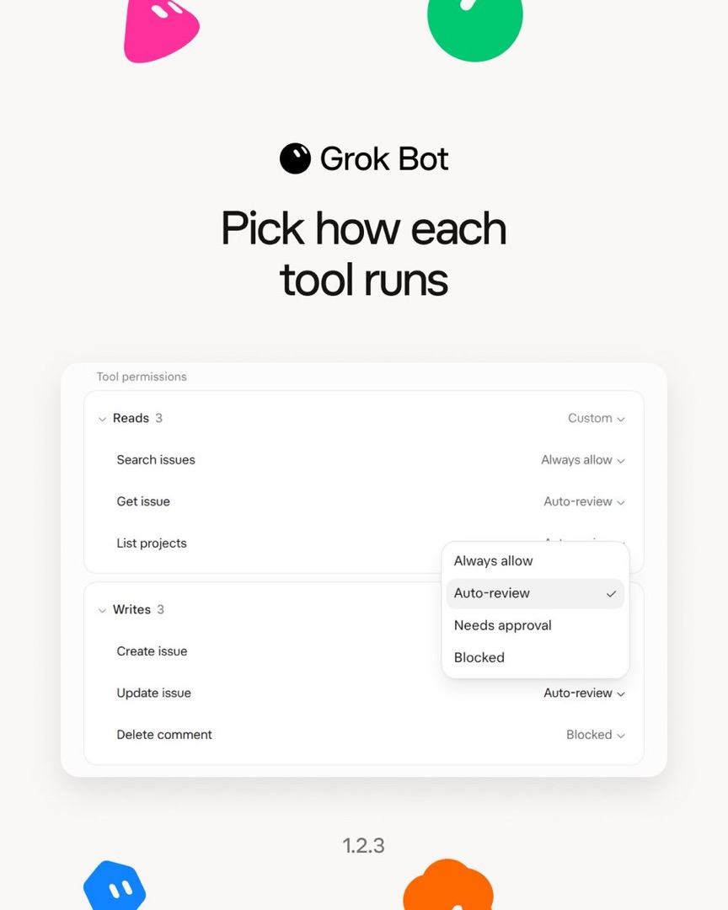
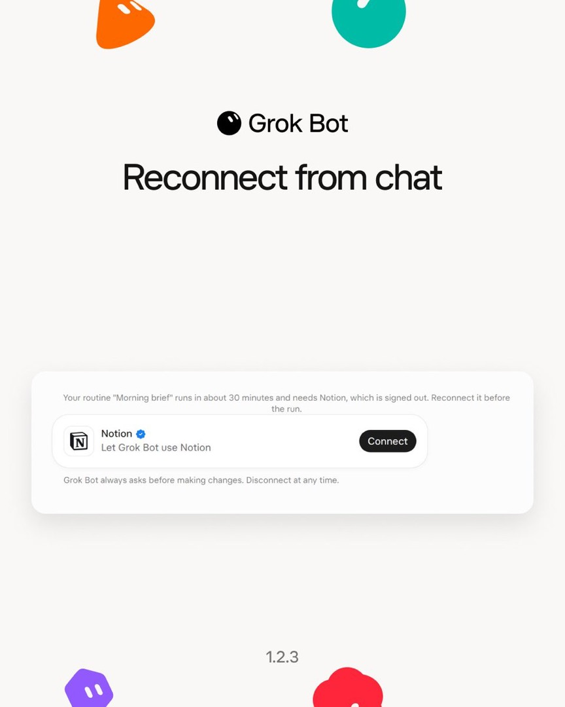
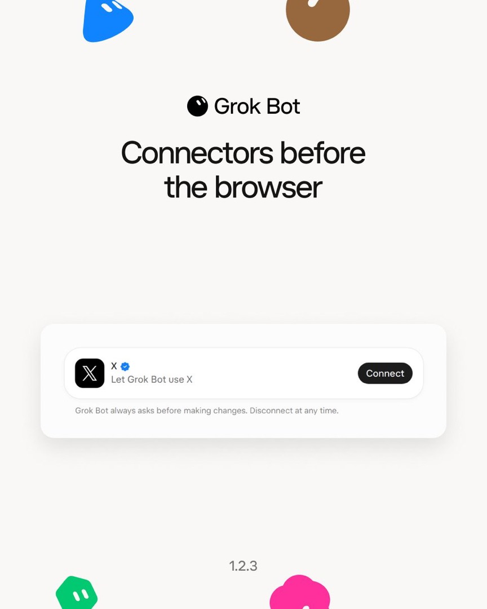
10｜Mailflare 开源自建域名邮箱
来源（X） · @GitHub_Daily · 2026-11-19 08:00
Mailflare 是一套能自己部署的开源办公工具，域名邮箱、日历、网盘、预约页都在里面，对标的就是 Google Workspace。
收信走 Cloudflare 的邮件路由，不花钱，发信可以用 Resend 每月 3000 封的免费额度，个人和小团队基本够用。
GitHub：https://github.com/hieunc229/mailflare
还内置了 AI 邮件助手，能搜邮件、起草回复、排日程，它写的回信要人看过点确认才发，这点我觉得挺稳。
Cloudflare 上有一键部署按钮，也能用 Docker 跑在自己的服务器上，界面支持 34 种语言，中文也有。
手里有闲置域名的，可以拿它搭个 hi@自己名字 的邮箱玩玩。
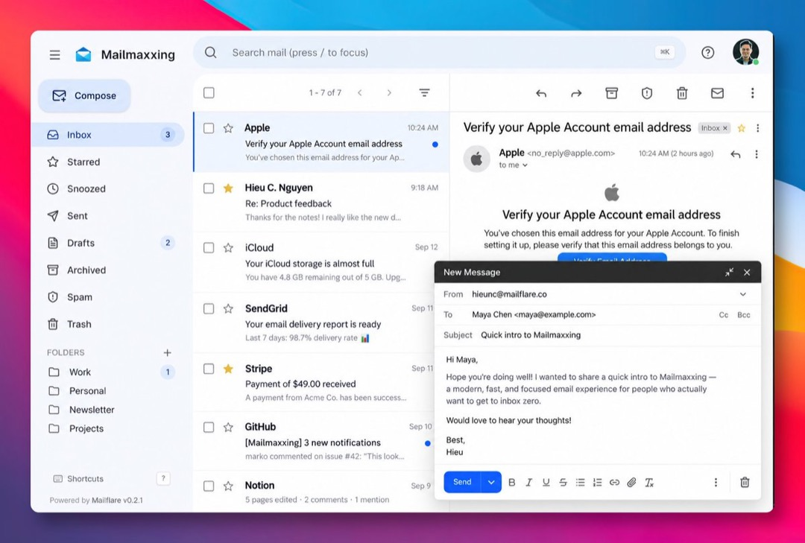
11｜FrontierML 评测自主科研
来源（X） · @SynScience · 2026-11-19 07:08
中文译文
隆重介绍 FrontierML，一个用于评估 AI agent 在自主实证机器学习研发方面表现的基准测试。
大多数现有的机器学习"研究"基准测试会给 agent 一个验证集或验证器，这与它的最终得分紧密相关。在实践中，人类研究者很少拥有这些。实证研究的很大一部分在于决定如何衡量一个问题上的进展，以及这些衡量结果在多大程度上值得信任。
在 FrontierML 的 25 个开放式问题中，agent 必须通过自己的实验来实现进展的操作化，构建局部代理并校准其可信度，同时朝着一个它们从未直接观察到的目标努力。它们提交的模型或方法随后在留出的评估集上进行评分。
原文
Introducing FrontierML, a benchmark for evaluating AI agents on autonomous empirical ML R&D.
Most existing benchmarks for ML "research" give the agent a validation set or verifier that closely tracks its final score. In practice, human researchers rarely have that. Much of empirical research is deciding how to measure progress on a problem and how far to trust those measurements.
In FrontierML's 25 open-ended problems, agents have to operationalize progress through their own experiments, constructing local proxies and calibrating how far to trust them, while working toward an objective they never directly observe. Their submitted model or method is then scored on a held-out evaluation.
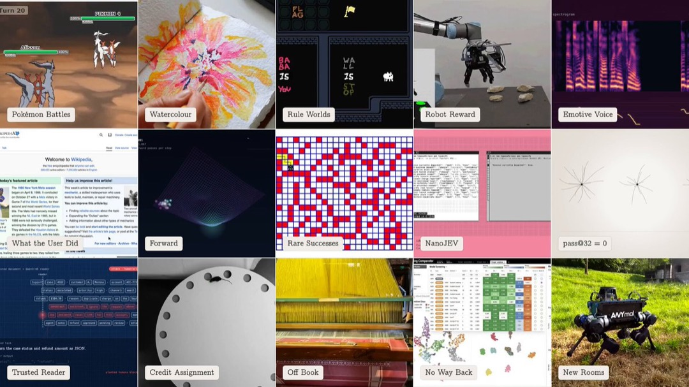
12｜Xing 4 昇腾训练 285B MoE
来源（X） · @Xudong07452910 · 2026-11-18 18:30
这是中国电信星辰 AGI Lab 刚发的 Xing 4 技术报告。在拿不到高端 NVIDIA GPU 的情况下，国产芯片到底能不能撑起前沿模型训练，这份报告给了一个很具体的答案。
大规模训练涉及远比单卡算力复杂的工程问题。团队基于 MindSpore HyperParallel，针对昇腾集群优化了混合并行、跨节点通信、分布式优化器和显存管理。
而且在 8,192 卡集群上，仅通过 CPU 绑核与核心隔离，就让训练吞吐量提升了 5–10%。
至于后训练部分，他们做了 TeleGym，把不同 Agent Harness 的执行、评测和轨迹接进同一套强化学习流程。长任务跑到一半模型更新了，轨迹也能接着跑下去。
他们还开源了一个 29B 的版本，每个 token 激活 4B，全程在昇腾和 MindSpore 上训练。
国产算力能走多远，看的是整套软硬件能不能配合好，Xing 4 算是一个很实在的工程样本。当然，模型效果、成本和长期稳定性还需要更多公开数据，才好判断和主流 NVIDIA 集群的差距。
📎 arXiv: https://arxiv.org/abs/2611.22115
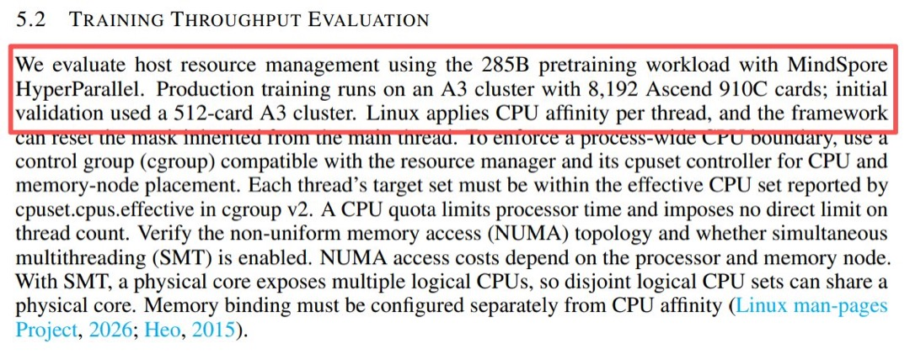
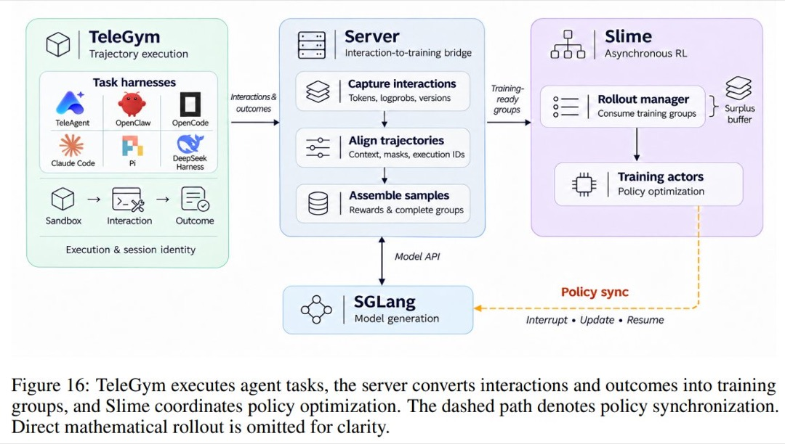
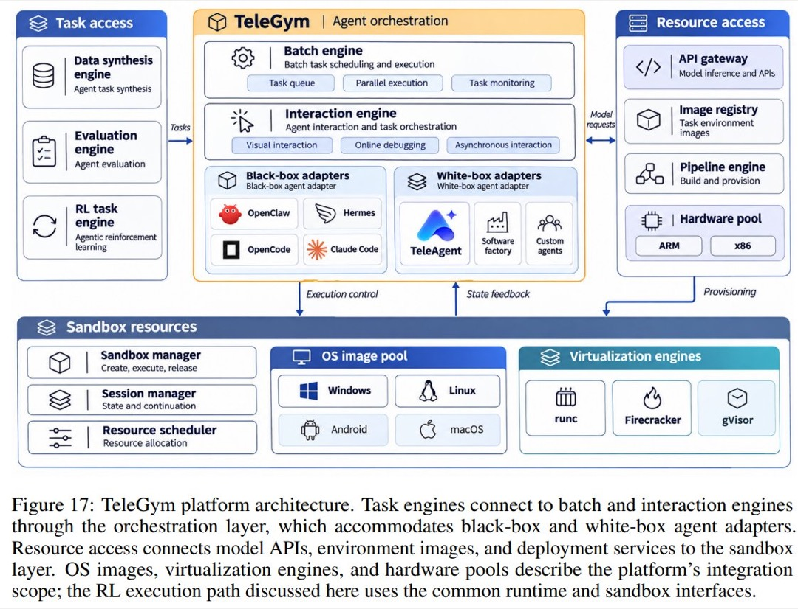